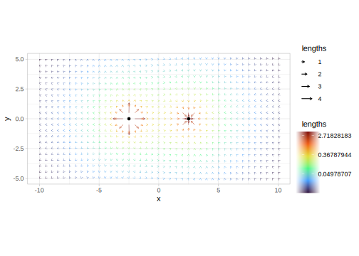

TODO
Installation
You can install the development version of ggfields like so:
# FILL THIS IN! HOW CAN PEOPLE INSTALL YOUR DEV PACKAGE?Example
This is a basic example which shows you how to solve a common problem:
library(ggfields)
library(ggplot2)
library(rlang)
library(dplyr)
#>
#> Attaching package: 'dplyr'
#> The following objects are masked from 'package:stats':
#>
#> filter, lag
#> The following objects are masked from 'package:base':
#>
#> intersect, setdiff, setequal, union
theme_set(theme_light())
charges <- data.frame(x = c(-2.5, 2.5), y = 0, charge = c(1, -1))
d <- expand.grid(
x = seq(-10, 10, length.out = 41),
y = seq(-5, 5, length.out = 21)
) |>
mutate(
distances = mapply(function(a, b) pythagoras(a - charges$x, b - charges$y),
a = .data$x, b = .data$y, SIMPLIFY = FALSE),
angles = mapply(function(a, b) atan2(b - charges$y, a - charges$x),
a = .data$x, b = .data$y, SIMPLIFY = FALSE),
potential = lapply(distances, function(x) charges$charge/(x^2)),
vectors = mapply(function(a, b) {
dx <- a*sin(b)
dy <- a*cos(b)
return(c(sum(dx), sum(dy)))
}, a = .data$potential, b = .data$angles, SIMPLIFY = FALSE),
angles = lapply(vectors, function(a) atan2(a[2], a[1])) |> unlist(),
lengths = lapply(vectors, function(a) pythagoras(a[1], a[2])) |> unlist(),
angles = ifelse(lengths < 0, angles + pi, angles),
lengths = abs(lengths)
)
ggplot(d, aes(x = x, y = y, angle = angles, length = lengths, col = lengths)) +
geom_fields() +
geom_point(aes(x = x, y = y), charges, inherit.aes = FALSE) +
scale_colour_viridis_c(option = "turbo", trans = "log") +
coord_fixed()
#> Warning: Removed 2 rows containing missing values (`geom_fields()`).
#> CRS is not specified, not correcting angles.